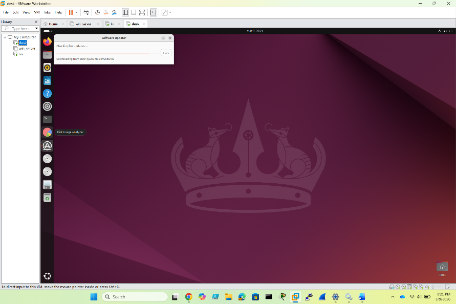
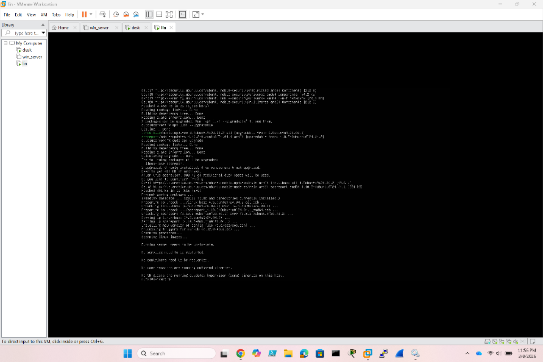
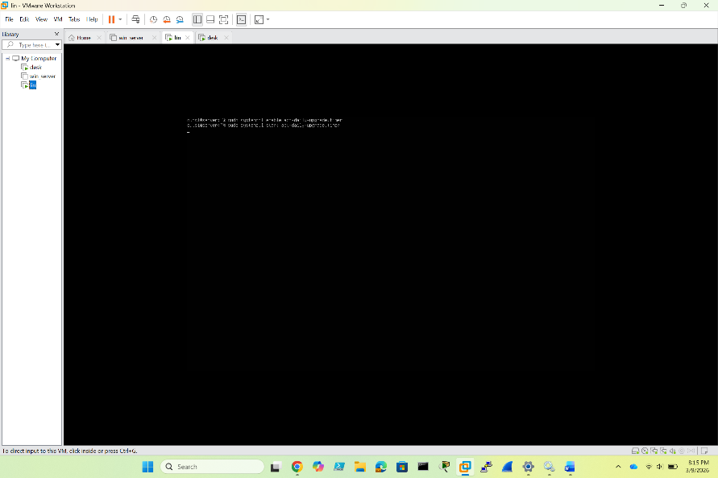

& Automation
- 01GUI method: Open the application menu and search for Software Updater. Let it scan for available updates, then click “Install Now”. Restart the system when prompted.
- 02Terminal method — update package index:
sudo apt update
This refreshes the list of available packages and their versions from all configured repositories. Review the output before proceeding. - 03Apply available upgrades:
sudo apt upgrade
Typeyand press Enter when prompted to confirm the installation. All packages with newer versions will be upgraded. - 04Install unattended-upgrades to enable automatic security patching:
sudo apt install unattended-upgrades - 05Start the automatic upgrade timer so it runs immediately:
sudo systemctl start apt-daily-upgrade.timer - 06Enable the timer to persist across reboots:
sudo systemctl enable apt-daily-upgrade.timer
The system will now automatically download and install security updates on a daily schedule.
Ballejos, L. (2025, October 9). What is Linux Patch Management: A Complete Guide | NinjaOne. NinjaOne. ninjaone.com
Ubuntu. (2018). Community Help Wiki. Ubuntu.com. help.ubuntu.com
Through the search part search ‘Software Updater’ and let it run, click to install now and restart when prompted | 
|
Update packages through ‘sudo apt upgrade’ and ‘sudo apt update’ and select y for conformation if prompted to. | 
|
To install and configure unattended-upgrades type ‘sudo apt install unattended-upgrades’ and ‘sudo systemctl start apt-daily-upgrade.timer’ and ‘sudo systemctl enable apt-daily-upgrade.timer’ | 
|
1)A system administrator should review the list of packages after apt update is ran because according to Ubuntu (2024) reviewing the list allows the admin to identify sec-critical update including CVE’s in packages ex for example, a major PHP version upgrade may break WordPress plugins not yet tested for compatibility.
2) According to Ballejos (2025), one of the most significant risks a Linux system administrator faces during patch implementation is service disruption caused by dependency conflicts or incompatible updates. A patch applied to a shared library or kernel module can cascade across multiple dependent services, taking down production systems unexpectedly.
A practical strategy to mitigate this risk is staging patches in a test environment before production deployment.
Works Cited
Ballejos, L. (2025, October 9). What is Linux Patch Management: A Complete Guide | NinjaOne. NinjaOne. https://www.ninjaone.com/blog/what-is-linux-patch-management/
Ubuntu. (2018). Community Help Wiki. Ubuntu.com. https://help.ubuntu.com/community/PinningHowto?action=show&redirect=PackageHolding